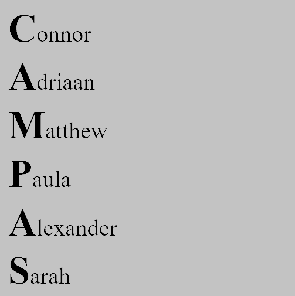
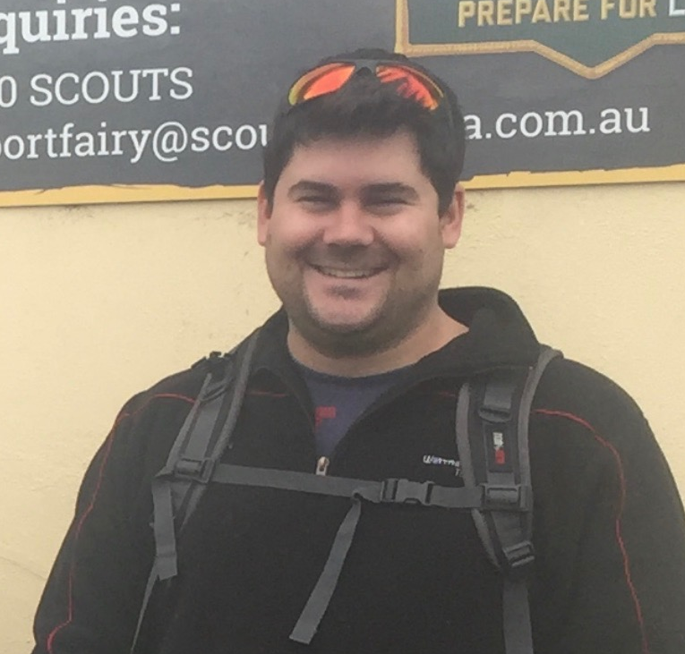
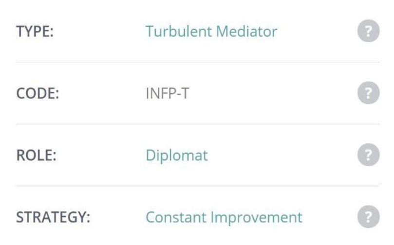
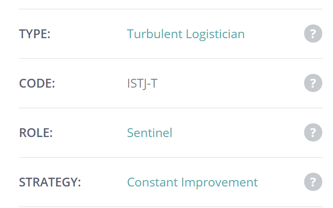
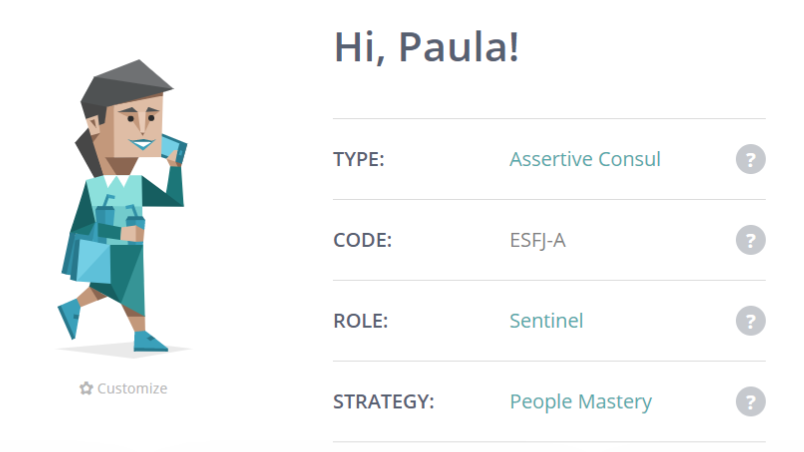
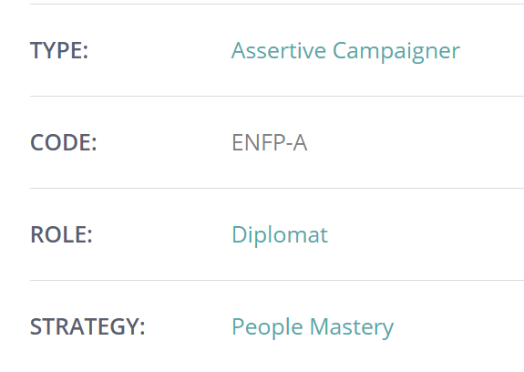
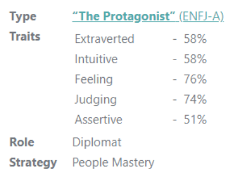
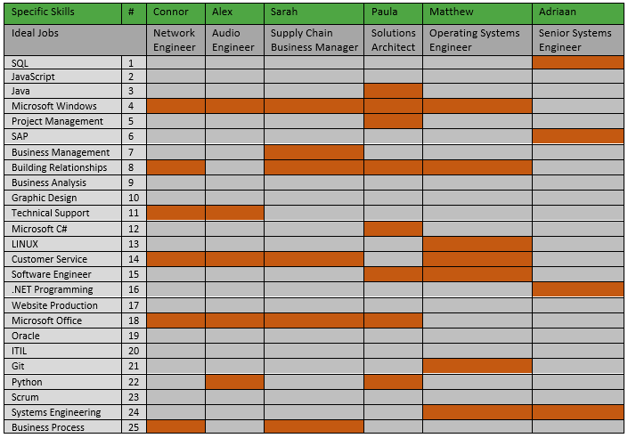
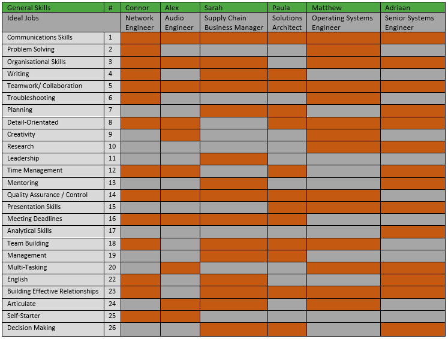

We have chosen to name our group Campas. It is simply an acronym of our names, incorporating everyone in the team.

My interests in IT came at a young age when I was excited by any technology that I could get my hands on. Slowly my passion became more honed, I got my first computer and quickly became the families go to IT fixer. I studied more and more until starting my Cisco Course for Highschool. From studying networks in high school, to messing around with tech outside of class, every part of the industry fascinates me. My interest in IT began when I was young, as my father has a background in IT software, which exposed me to newer and newer technologies as time went on, that spurred me on to seek out more knowledge by myself.
I am 23 years old with South African background. I can speak 2 languages and have a brief education in Mechanical Engineering. To me, IT has always been interesting. Since the age of 5-6 I would always spend as much time as I could learning more about IT. I started out on my dad’s Windows XP computer writing my name in font size 72. I then built my dad’s business computers with his IT consultant when I was 9. I still do not feel informed and capable to do as much as I would like to. I am very interested in App development, software creation and hardware solutions to make everyday life easier.

I am an avid sailor with over 20 years' experience and served 6 years in the army. I completed my Cert III in Heavy Vehicle Road Transport and my Cert IV in Engineering (Fluid Power) during my time in the Army. I completed my Cert III in Light Automotive Technologies last year while working for Warrnambool Toyota. My main interest in IT would be computer hardware. As I undertake system integration for customers, keeping up to date with current hardware options is a must. My interest in IT started approximately around the age of 7 when I was given a small DIY, build a computer kit for my birthday. Since then I started building and upgrading PC’s as a hobby, which turned into a side job after I discharged from the Army. My experience in IT has been mostly limited to the hardware side of the industry.
I was born in Chile and immigrated to Australia with my parents at the age of 4. I have completed all my education in Australia. I am fluent in Spanish. I am married, live in south west Sydney and have 2 teenage daughters and 2 dogs. I moved around in a few roles and eventually ended up in a team which was called ISBU (internet & service provider business unit). Working in this team we delivered data/mobile services to wholesalers and service providers. My interest in IT was generated while working there and becoming a sme in Ethernet international product. I spent considerable time working through process problems with the product manager. I often felt that the only difference between us was he had a degree and felt that the lack of formal qualifications was holding me back from achieving more in my work life.

I was born in Alice Springs NT, and moved to Brisbane when I was 6 years old. I have worked in the hospitality industry for over 10 years now, doing everything from housekeeping and bartending, to functions supervising and restaurant management. My last job was a night manager position for 2 years at a large backpacker’s hostel with bar attached. My interest in IT started when I was very young playing video games and has only grown over the years, but unfortunately my experience in IT is a little lacklustre so far. I play guitar and other instruments and even studied an Audio Engineering and Sound Production course a while back.
I am currently completing my second year of my Bachelor of Business – Logistics and Supply Chain Management at RMIT. I have accumulated a collection of Diplomas and Certificates over the years; Logistics, Customs Brokerage and Aviation Security are just a few. I really enjoy reading and writing, and I even attended the FIATA World Congress 2018 as a delegate and guest speaker, in New Dehli, India. I am eager to learn and establish how software can communicate with one another to enable business operations to run smoothly and cohesively to provide the most effective outcome. I have always had an interest in IT, but can safely admit, it has increased by far since beginning my Bachelor’s Degree in 2018. This is because my course is through an online forum and requires me to utilize an array of software and websites to complete my degree.
The Myers-Briggs Test shows I am a Turbulent Mediator – INFP-T Diplomat. The outcome of these results is scarily true, the more I read the more I aligned with everything it was saying, being from work habits, work and life flow balance, friendship. I think this would benefit, working as a small group, as I tend to thrive in that area, I’m wanting everyone to do well in the group. I think this would benefit, working as a small group, as I tend to thrive in that area, I’m wanting everyone to do well in the group, but also learn and grow more, as I’m more than happy to help anyone even if I’m not sure what the answer is myself.
The Learning Styles Test shows I am 32.6% Pragmatist, 32.6% Reflector, 25.8% Theorist and 9% Activist. I really do like to stand back observe and see how everything is done, then reflect on what I have seen and make my own decisions and conclusions, sometimes a considerable amount of time and effort are required to develop these ideas. I think the results from this test show that I would be good with discussions, showcase/demonstrations, feedback from others and coaching. Having a group discussion to find out what people have sound knowledge and fill in the gaps, I would not push someone away if they came to me looking for help.
The Big 5 Personality Traits Test shows I am predominantly Agreeable and Conscientious towards others.
The results for this test show that I’m clearly an introvert, that doesn’t have great emotional stability, am generally agreeable, but at the same time conscientious of my actions, but also approaching the situation with intellect and imagination. It might be a little hard for me to keep communication with people, as my introversion and emotional instability might not agree sometimes, thus making me hard to contact. Try to not let my emotions get in the way too much when it comes to uni work. Take breaks every so often to not let everything get too over whelming. Let the other members know that I am prone to sudden drops in mood.

Being a Tactile learner, the jobs I would find most useful and appealing would be those that require me to do something. Thus, jobs such as IT repairs, software and hardware development and IT integration would be best suited to me. Additionally, as a Campaigner, I am very curious and observant, which would help me to see things others may miss and offer unique perspectives in the workplace. However, I do find it difficult to focus on tasks that I find little value in, so being aware of this would help in responding to the issue should it arise. From the OCEAN test, I also found that I was very agreeable and conscientious, meaning that I would be able to help and support those around me, whilst being able see the big picture.
My results indicate that I favour being in more of a leadership role. This would impact my behaviour within a team as I would try to lead and organise the people to complete a task in an efficient way. As an extraverted person, working in a team would suit me as I can communicate and bounce ideas off of others. However, I do like to work independently, as described in the Myers-Briggs test. This may impact my ability to work collaboratively in a team as I would want to have my own role and not share a role with someone else. As a leader, I would use my position to the benefit of the team, not myself. If I were in a team where I could not take a leadership role, this may cause me to feel boxed in and numb my creativity. As a Campaigner, this would be very difficult as it would lead me to become less focused and enthused.
When forming a team, I should make sure that I am not trying to do the same role as someone else. Rather, I would clearly define and understand the role that I have and the roles of the team members. I would be aware of my tendencies towards others and adapt to the circumstances to help those around me so we could succeed together as a team. From the Myers-Briggs test, I found that as a Campaigner, I have a keen ability to compliment the communication and experiences of those around me whilst offering exciting and unique ideas to projects. Campaigners are excellent communicators and are very approachable, so I would be able to get to know those around me well and make them feel comfortable in the work environment.

The defining characteristics of integrity, practical logic and tireless dedication to duty make Logisticians a vital core to many families, as well as organizations that uphold traditions, rules and standards, such as law offices, regulatory bodies and military.
The results of my tests were very consistent based on how I work and interact with those around me. I am acutely aware of my weak points when it comes these tests as it is something that I discovered during my training in the Army. During my leadership courses and other subject courses we conducted more in-depth testing around our learning and leadership style. It was during these courses that it was pointed out to me that I have excellent leadership qualities, but I need to be far more aware of what my team's capabilities are and to make sure that communicate better with those around me. This is something I have been working towards improving on during and after my time in the Army.
These results may end up having a negative impact on certain types of required teamwork. I am a very dominant personality and work better when I oversee a group. If another member of my group has a similar personality type to myself, we could end up clashing and not being productive. Ideally, I would be in a group where I could delegate tasks to those who were best fitted for that role, while also providing my own input in other areas. If I am unable to fill the role, I am best suited to, I understand the requirement to adapt to my group’s needs. Although the above paragraph seems to reflect negatively upon myself, this does not mean I am unable to work with others. Putting the groups needs before my own is something that I have worked extremely hard on in the last 4 years.

The results of the various tests consolidate many personality traits that I realise I have but do not think too deeply about. They reaffirm what I believe some of my skills are and assist in writing cover letters and resumes around my strengths. The results further suggest that I possess desirable traits sought out by employers. For example:- inner drive and ambition to excel in given roles shown by a willingness to work to project completion doing whatever is required and invest in accomplishing tasks to the best of my capabilities. It is important to continue to develop my skills as the test results indicate that the skills are highly desired by employers.
I believe I am a team player and the personality tests seem to agree with that. I just want to get things done, completed to a high standard and would do well to find other similar minded people. The results provide a motivational boost to keep striving as a team player as well as reaffirming my own personal goals to be a valued member in a team driven environment. The results indicate that even though I’m a driven individual this trait requires balancing within a team environment, as overly extremely driven traits can also hinder overall team goals.
I would struggle with disorganisation and chaos and would start assigning tasks, this may or may not go down well, however due to being time-poor. It is important to pull together teams that have a range and balance that fit the overall team/business objectives. In addition to needing achievement driven individuals one would also need team members with other soft skill sets in order to ensure the team environment operates at its optimum.

The Campaigner personality seems to be a free spirit. As described in the test results, a Campaigner can often be the life of a party but is more interested in the social and emotional connections they make with people, rather than the sheer excitement of the moment. I believe for me; this test shows that while I can sometimes be quiet and reserved, thinking more with my heart than my brain, I can still be quite confident, calm and collect in many situations. This can be a beneficial trait for creating and working in teams, as I can find it easy to empathize with others it is easy for me to get to know people on a personal level, making it easier to connect and express ideas and solutions between each other. Downsides to the Campaigner personality can be finding it difficult to focus, being easily distracted or overthink things too much. I can also sometimes start working independently, drawing focus away from the group.
The Learning Styles Test through Emtrain.eu indicated that I am mostly a Reflector and an Activist. Emtrain describes Reflectors as those who tend to be more cautious who prefer to stand back and observe. They take the time to collect and interpret information to help them reach their goals. Reflectors usually look at the big picture by gathering information from previous experience as well as current study. With working in groups, Reflectors work best with paired discussions and demonstrations. I believe this is quite accurate, as I do tend to be more cautious and take the time to observe while collecting information.
The Leadership Style Quiz by the University of Southern California states that I am a Postmodern Leader. A Postmodern Leader is someone who understands that leadership requires both logic and creativity. They see true human potential, and the role of a leader can be enjoyable. The Postmodern Leadership style is a valuable commodity for improving possible career outcomes. When forming and working in a group, the confidence of a leader and aspiration to help others can be very beneficial. One problem with a Postmodern Leader working in groups is ego. Sometimes I can feel the need to be the one in control, or even sometimes dismiss other opinions.

Myer-Briggs Test -Being described as a protagonist, this generally means that I am a natural-born leader with a strong personality. I am passionate about what I do and strive to understand not only myself, but others around me and genuinely show an interest in people. I am constantly motivated to improve myself and my skills and tend to seek stimulating challenges and experiences.
What’s Your Learning Style? –My results imply that I am a visual learner. This means I understand and remember things mainly by sight and I generally am organised and neat when it comes to learning. It also means that can easily be distracted by sounds and can have some trouble with spoken instructions.
Big Five Personality Test –This test, noted that I was outgoing and social, optimistic and friendly, but that my imagination tends to be conventional and I can often be impulsive.
It is clear that I have a strong personality and may come off as assertive, but is it met with genuine intentions. For the most part of previous group projects I have taken lead, completing more of the complex tasks and finalising the assignments on behalf of others. This has come without hesitation and realisation of what I am doing.
Knowing that I have these personality traits, has made me realise I need to step back and work more cohesively with my group and take others ideas into account. As IT is a new topic for me, I feel less inclined to take charge and more inclined to learn and contribute.

"Our group Campas is made up of 6 unique individuals. While some of our personality traits and learning styles are quite similar to each other, like leadership qualities and confidence working with others, we all seem to have a wide range of strengths and weaknesses between us. When looking at the personality tests for everyone, it was apparent that we all share some specific attributes, while in other areas some of us may be more confident than others. We each have our own weaknesses (as indicated in our individual tests) but working as a group we should be able to match those weaknesses with others’ strengths and all help each other. We have all been shown to have confident personalities when it comes to working in groups; we are comfortable communicating and sharing, and not too shy to ask questions. As expected from our learning styles tests, forming this group was quick and easy, everyone was on-board and eager to learn right from the start."
After reflecting on the group processes of assignment 2, it seems not much has changed. Although there has still been a bit of a lack in communication, we have managed to control the organization and deployment of our work for assignment 3. Much the same as our previous assignment, each of us has chosen a role that we feel confident in and started working on our own sections, while providing commentary and feedback on each other’s work.
16Personalities “Myers-Briggs personality test” - Viewed Online; https://www.16personalities.com/
Emtrain “Learning Styles Quiz” - Viewed Online; http://www.emtrain.eu/learning-styles/
University of Southern California “Leadership Style Quiz” - Viewed Online; https://eml.usc.edu/leadership-style-quiz
OpenPsychometrics “Big Five Personality Test” - Viewed Online; https://openpsychometrics.org/tests/IPIP-BFFM/
Campas is comprised of people with a broad spectrum of interests and potential career paths. Though all of us are looking at careers that incorporate different elements of IT, we all aspire to achieve different goals. Most of our desired careers are focused on different forms of engineering, from networking and operations, to sound production and systems engineering.
From our Groups ideal jobs, will break it up into 2 parts, being General Skills, and IT- specific skills. Our groups general skills set consists of Communication skills, for talking to customers or communicating your point effectively to team members or co-workers to achieve the best result without conflict. Problem solving and troubleshooting will come into play a lot with typically the Engineer roles, but with other non-IT based roles it ties in nicely with communication skills. Teamwork/ Collaborations and time management bundle well, as if you can manage your time well and work in a team, bigger projects can general be completed faster. Some of the other skills required outside of the IT based roles are skills really needed in areas such as; building effective communications as this will help any business manager to maintain business relations for considerably longer, or being detail-oriented in the music industry would help to pick up the little things that most might miss.
Connor is looking to be a Network engineer. A Network Engineer is responsible for managing a network, having a background in networking, routing and security. “The job is appealing to me as it utilises previously known skills and places me in an environment that would enable me to constantly develop my skills. To start with a plan on working towards the qualifications I need for the job, I would need to gain more experience with switching protocols used in an Enterprise setting, gaining a professional certification for CCNP, hopefully an internship once I have the qualifications necessary.”
Adriaan wishes to be a Senior Systems Engineer. An essential element of supporting learning and innovation along with College operations, is a committed team of technical service professionals. The Senior Systems Engineer is a middle leadership role and will play a pivotal part in the recently formed Knowledge Services team (combined ICT and Information Services). The Senior Systems Engineer will be an enthusiastic and skilled IT professional, with experience and a passion for serving the teaching learning and operations of a dynamic and innovative school. They will see this role as an opportunity to partner with a great leadership team in making a positive change to our IT operations across the organisation, committed to maintaining a growth mindset and actively exhibiting the character and attributes of a lifelong learner.
Matthews ideal job would to be an Operating System Engineer. “The role requirements for this job are a bachelor’s degree in IT but ideally, I would prefer to further my studies before undertaking this role. Personally, I would like to complete my master’s degree of Information Technology to further my knowledge in the field. The operating system engineer role links my passion for computer hardware with the software requirements of operating systems. I have some amount of knowledge of the hardware requirements for some specialised systems such as NAS, raid setups, server hardware, etc but I lack the knowledge needed to perform troubleshooting and diagnosis of the software systems.”
Paula is aspiring to be a Solutions Architect. “Digital innovation role to work with customers help solve problem or opportunity that they deem significant in their community/domain and that relies at least partially on information technologies. The Solution Architect plays a critical role by applying the latest cloud computing technologies, application architectures, and integration approaches to each Digital Innovation engagement. I find this appealing because I want to learn more about cloud technology and understand at a deeper level what solution architects do and how they devise individualised solutions for a specific client requirement.”
Alexander is striving to be an Audio Engineer. An Audio Engineer is a trained professional who works with the mechanics of recording, mixing and reproducing sound. They can work in many different areas from recording and mixing music in studios, handling the technical aspects and sound levels of live gigs/festivals, and even audio design and production for video games and movies. “I have developed an interest in audio engineering ever since I could pick up a guitar. As much as I wanted to play music, I also loved the idea of sharing music, which got me on the idea of recording and mixing. After learning a lot about music in school, and many years of random experiences since, I found that audio engineering encompasses a lot of my biggest interest, like music (live and mixed) and video games.”
Sarah is working towards being a Supply Chain Business Operations Manager. Supply Chain Managers are responsible for overseeing and managing company’s overall supply chain and logistics strategy and operations in order to maximize the process efficiency and productivity. In addition, they play a crucial role in developing and maintaining good relationships with vendors and distributors. “Working as a customs broker, my role is just one aspect of many supply chains. This position appeals to me, as it will identify how a particular supply chain operates from start to finish and what is involved in operations across the whole supply chain.”
After comparing the career prospects of each member, it is apparent that we are all choosing rather different directions. Although Network and Operating Systems Engineers can end up working similar roles to each other, an Audio Engineer or Supply Chain Business Operations Manager roles are quite distinct and can be involved in completely different industries. Working towards various industries, we all require the same steps to achieve our goals; Study certain fields to achieve the necessary degrees and network/communicate with others in those fields to try and source work.
New Horizons Computer Learning Centers “How to become a Network Engineer” – Viewed Online; https://www.newhorizons.com/article/how-to-become-a-network-engineer#:~:text=Network%20engineers%20(also%20called%20network,default%2C%20the%20entire%20organization).
Entech US “Senior Systems Engineer” – Viewed Online; https://entechus.com/senior-systems-engineer/#:~:text=Position%20Summary%3A,technology%20of%20their%20assigned%20accounts.
Indeed Career Guide “Learn About Being a Systems Engineer” – Viewed Online; https://www.indeed.com/career-advice/careers/what-does-a-systems-engineer-do
Career Explorer by Sokanu “Solution Architect” – Sokanu Interactive Inc. 2020 – Viewed Online; https://www.careerexplorer.com/careers/solution-architect/
Career Explorer by Sokanu “Audio Engineer” - Sokanu Interactive Inc. 2020 - Viewed Online; https://www.careerexplorer.com/careers/audio-engineer/
TalentLyft, Talent Acquisition Software “Supply Chain Manager Job Description” – Viewed Online; https://www.talentlyft.com/en/resources/supply-chain-manager-job-description
Attendees: Matthew, Paula, Adriaan
Topics bought forward from last meeting: Nil
Agenda items:
Attendees: Adriaan, Alexander
Topics bought forward from last meeting: Upload remaining A1’s onto MS Teams
Agenda items:
Attendees: Matthew, Paula, Sarah, Connor
Topics bought forward from last meeting: Project idea
Agenda items:
I'm going to cover off on a bit off a progress update just so we can see what needs to be focused on:
Attendees: Matthew, Paula, Sarah, Connor, Adriaan, Alexander
Topics bought forward from last meeting: Project idea, Reports, Ideal jobs, Industry data
Agenda items:
This section covers all the Industry Data for our given ideal jobs for each member, all of the data was supplied by Burning Glass. Firstly, I will cover the job titles associated with each group member, these are ranked in no order.
Some of the Job Titles for our group include; a Network Engineer, a Senior Systems Engineer and an Operating System Engineer, just to name some of the some of the in demand IT based Ideal jobs, some of the other non IT based jobs include an Audio Engineer, a Supply Chain Business Manager and a Solutions Architect. Based upon the Burning Glass data provided, there are 120,353 listings, the top titles is a Systems Engineer also known as an Operating Systems Engineer with 786 listings, the next highest within the group, is the Network Engineer with 666 listings, lastly from the IT based skills is the Senior Systems Engineer with 464 listings.
From our Groups ideal jobs, will break it up into 2 parts, being General Skills, and IT- specific skills. Our groups general skills set consists of Communication skills, for talking to customers or communicating your point effectively to team members or co-workers to achieve the best result without conflict. Problem solving and troubleshooting will come into play a lot with typically the Engineer roles, but with other non-IT based roles it ties in nicely with communication skills. Teamwork/ Collaborations and time management bundle well, as if you can manage your time well and work in a team, bigger projects can general be completed faster. Some of the other skills required outside of the IT based roles are skills really needed in areas such as; building effective communications as this will help any business manager to maintain business relations for considerably longer, or being detail-oriented in the music industry would help to pick up the little things that most might miss.
 Connor’s required skill set has a moderate demand from employers, from knowing the business process and being proficient with Microsoft Windows and Microsoft office respectively, using the knowledge of the business process and building relationships to create and maintain strong relationships with team members or clients, with the customer service in tow to make sure each company on either side of the deal to be satisfied after completion of the project.
The general skills side of the coin is a bit more in demand from employment, being the top the three highest ranked in the general skills are Communication skills, Problem Solving and lastly Organisational skills. Connor will be using a variety of general skills for his ideal job, being detail orientated and using quality assurance to make sure the job is done to the highest capacity, but also being able to work well in a team effort.
The three highest ranked IT specific skills which are not in Connor’s required skill set are Java, JavaScript, and SQL. The three highest ranked in the general skills which are not required skills are Planning, Creativity and Research.
Adriaan’s IT-Specific Skills are small but highly ranked highly in terms of demand, specialising in System Engineering, but having a thorough understanding of SQL, SAP and.NET Programming.
His required general skill set is very similar to a lot of the other jobs, as having good communication skills, working well with team members to help with building effective relationships between him and the customer organisational skills, time management skills to ensure the job is done within a specified amount of time, researching and being detail oriented, to help mentor other staff appropriately.
he three highest ranked IT specific skills which are not in Adriaan’s required skill set are Java, JavaScript, and Microsoft Windows. The three highest ranked General skills that are not required are Problem Solving, Writing and Troubleshooting.
Matthew’s IT-Specific skill set is moderately sought after, having a sound understanding of Systems Engineering, a sound understanding of various computing languages, as well as operating systems, having software engineering traits for a operating systems engineer is a huge bonus as matt is open to do more that just what is in his skill set. Working and collaborating in team with members possibly across the world but building and maintain good relationships with customers and other clients.
Matt’s has a big variety of general skills that are needed for his ideal job, from working effectively in a team a building good relationships within those teams, to communicating effectively with clients or team member, having organisation and time management skills to meet deadlines, but have the creativity to think outside the box when it comes to operating systems and articulate all that information to people at various level within the busines if necessary.
The three highest ranked IT specific skills which are not in Matt’s required skill set are Java, JavaScript, and SQL. The three highest ranked in the general skills that are not required are Writing, Planning and Leadership.
Paula’s IT-Specific Skills are highly sought after, having a good understanding around a multitude of Computer Programming Languages C#, Java and Python are the main three, mainly Project Management and building relationships with clients and other workers possibly from all over the world as a team.
Paula’s required general skill set consists of being able to work effective in a group, possibly collaboratively with team members from all over the world, Planning for the project to make sure the deadlines are being met with proper time management with decision making, she will need a variety of good communication skills both verbal and written.
The three highest ranked IT specific skills which are not in Paula’s required skill set are SAP, JavaScript, and SQL. The three highest ranked General skills that are not required in her skills set are Problem solving, Troubleshooting and Creativity.
Alex’s IT specific skill set falls on the moderate side in terms of demand from employers, the highest scoring IT specific skill was Microsoft Windows. The demand from employers for jobs of this kind are looking for someone who can troubleshoot most problems but also put on a maintain good relationships with clients by having good customer service skills, some knowledge in Python may be helpful in the future.
Alex’s general required skill set ranks fairly high among with the other members, having good communication and organisational skills blends in well with time management, other general skills like being detail-orientated, and having a spark of creativity are highly required in the Music Industry, but one needs to be able to meet deadlines, articulate themselves properly.
The three highest ranked IT specific skills which are not in Alex’s required skill set are Java, JavaScript, and SQL. The general skills that are the highest ranked not required in his skill set Problem solving, Writing and Planning.
Sarah’s IT-Specific required skill set is highly required for her ideal job. Having a good thorough understanding of the business process, management and building effective relationships to help things go smoothly between clients or employees. A sound understanding of Microsoft Windows and the Microsoft Office Suite as to effectively achieve some of the duties required by the job.
As a Manager, Sarah will have many duties the general skills table aligns with, from presentation skills, meeting deadlines and having good communication skills to confirm deals with clients and properly achieve a good outcome, to building effective relationships, team building and mentoring to train capable employees.
The three highest ranked IT specific skills which are not in Sarah’s required skill set are Java, JavaScript, and SQL. The thee highest ranked General skills that are not required are Problem Solving, Troubleshooting and Creativity.
Burning Glass <https://www.burning-glass.com/wp-content/uploads/Skills_Gap_Different_Skills_Different_Gaps_FINAL.pdf>.
Senior Systems Engineer <https://www.seek.com.au/job/50699412?type=promoted#searchRequestToken=d9d9bc15-e5ba-4647-91d5-737c71a72711>.
Network Engineer <https://www.seek.com.au/job/50713335?type=standout#searchRequestToken=e4530dcc-be54-4b7d-9f3c-5c427e501422>.
Operating System Engineer <https://www.seek.com.au/job/50655543?type=standout>.
Audio Electrical Hardware Engineer <https://au.indeed.com/viewjob?jk=7e20bd88eeda9688&tk=1ekdgtb5984sh800&from=serp&vjs=3>.
Solutions Architect <https://www.seek.com.au/job/50604560?type=promoted#searchRequestToken=193ae442-4901-4e72-ad79-4c7fa60d6248>.
Team CAMPAS interviewed Sandy Panyanouvong a Corporate Support Executive who provides technical support to Sales Executives at BrennanIT a managed services provider. Sandy has been in the IT industry for 3years since graduating from UTS. Sandy’s day to day duties would include visiting current and prospective clients and listening to their needs around technology. Putting together proposals and solutions around their technological needs and assisting sales executives with producing contracts. Sandy explained that a large part of her role requires her to actively listen and understand people's needs and requirements for their business so she can most appropriately put a solution together for them. On a daily basis, she would need to internally interact with sales executives, solutions architects, project managers and client managers in order to fully understand and develop a solution that will work for the client/end user. Sandy’s role requires technical knowledge of IT systems and how they work and also the ability to explain this to people who may not have any IT understanding.
As artificial intelligence expands, fragments of our favourite sci-fi media creations are injected into real life, with the most highly anticipated technological advance being the idea of autonomous vehicles. To put it in more simple terms, vehicles capable of operating without any human involvement. But, do we really need them? Short answer, yes, we do. Globally, it is estimated that approximately 94% of current traffic accidents are caused by human error alone. Autonomous vehicles aim to cut that percentage down to zero. This statistic alone is enough to invest in its development and is the essence of its existence.
The creation of this concept seems simple enough, create a vehicle that I don’t have to operate. Conversely, when the concept is broken down, you can actually see the level of complexity it comprises. Not only will it take thousands (if not, millions) of man hours to perfect, but a vast selection of industry specialists working together to ensure the safest transition into the future we are developing. From moral and ethical considerations, to legal and safety requirements, it is clear why this technology has not yet been achieved.
Currently there are five recognised levels of driving automation, with level 1 being mostly human controlled and level 5 being the ultimate objective. Generally speaking, the general public worldwide are sitting at levels 1 and 2 – known as ‘partially automated’. Whilst new vehicle models are being released with advanced technology such as lane-keep assist, cruise control and reversing sensors, we are nowhere near close to being further up on the tier. Level 3 is more progressive, assisting with speed management and steering, road environment monitoring but requires human fall back. Level 4 are again more forward-looking as they are more capable of operating some but not all driving modes, called high automation. Limitations of this level can be caused by factors such as weather conditions or speed. Level 5 driving automation will be required to utilise sensors, GPS, cameras, data, high speed internet connectivity and data processors to enable substantial data collection to be filtered so that the right action can be implicated in a split second to adjust the appropriate control of the vehicle, known as machine learning. This is a highly complex concept that requires static algorithms of inputs and outputs to precisely react to the environment it is in.
Current research, testing and investment in the private sector means that companies like Waymo and Tesla are at final rollout phases of level 4 automation and are working on prototype testing of fully driverless level 5 vehicles. If these phases are successful, they still need to pass legislation and be written into the road rules of the country they are being developed in. They will also need to be introduced and subsequently co-exist with existing vehicles, some of which are still at a level 0 autonomy, meaning they have no assisted or automated driving technologies, and will need to be able to adjust its capabilities until the infrastructure can be developed and expanded to accommodate a complete fleet of autonomous vehicles.
First of all, it is expected to widely impact the (un)employment rate. Of course, job losses are inevitable but they won’t occur overnight and won’t be as severe as first believed. Yes, drivers will eventually be replaced by this technology but the expansion in various other industries (such as; engineers, technicians, software developers and designers to name a few) will counteract this loss on the unemployment rate. This is a necessary trade off if we, as a society, are to evolve and grow.
Welfare implications are varied and effect on both positive and negative levels. For example; driverless vehicles can increase mobility to those who are too young, too old or whom are compromised by a disability such as vision or hearing impaired. They can assist occupants who are distracted, intoxicated or those suffering from medical conditions, for instance; seizures. This is all well and good, but it comes at a price. Earlier we mentioned technology that makes up the core platform of an autonomous vehicle, these components require highly auxiliary power from vehicles and therefore create a huge demand for increased energy consumption. A report by the financial review in 2017 claimed, ‘Australia households pay the highest power prices in the world’ which is a concerning position for autonomous vehicles in the Australian market.
Consumers will also see a reduction in insurance premiums, however, insurance companies and repair contractors are likely to experience a huge decline in business as one of the key aims for autonomous vehicles it to significantly reduce road accidents. Insurance agents will need to develop new policies and models to accommodate the changes to stay afloat and repair agents will need to advance with the times and perhaps expand their physical repairs to a more technology based approach.
Fuel efficiency is predicted to increase significantly. Drive cycles will run at optimum capacity as the vehicle is able to accelerate and brake more efficiently than their human counterparts. Privacy concerns and terrorist scenarios are also being deliberated as the vehicles location and position needs to be integrated into an interface that others will potentially have access to. This can ultimately land in the wrong hands and lead to unimaginable outcomes. Although these are only estimated predictions, additional impacts are likely to be discovered as further advancements are made.
To start with, for us (IT students), this opens up a huge prospect of career outcomes. Although a solid platform for the concept has already been created, there is still an unprecedented amount of work to be completed before level 5 automation can be finalised. Total implementation ready for widespread public use isn’t expected until at least 2036, and collectively will only make up approximately 10% of vehicles on our roads.
Friends and family who have careers as vehicle operators are likely to be relieved of their duties depending on the industry they operate in. Classified as low-skill works, with their main proficiency being the aptitude to drive, these ‘drivers’ are likely to be substituted for their autonomous equivalents. Obviously autonomous vehicles cannot replace paramedics, fire fighters, police officers or the physical delivery of food or alcohol but they can substitute general human vehicle operators. Workers in these jobs will need to adapt and find a new career path, where they may require further skill development and additional training, which could be difficult to accommodate to. Having noted the above, the outcome can affect others in a different direction. With an automated service, there is less need to actually own a vehicle yourself with the potential to call a driverless car from a shared fleet platform, reducing the cost of insurance, car registration and overall fuel consumption expenses leading to an increase in home income, but a decrease in the economy.
Dept. of Infrastructure, Transport, Cities and Regional Development, n.a. ‘FAQ – Automated Vehicles’, DITCRD. Viewed 8 October, 2020. <https://www.infrastructure.gov.au/transport/land-transport-technology/files/FAQ-connected_and_automated_vehicles.pdf>.
Faggella, D. 2020. ‘The Self-Driving Car Timeline – Predictions from the Top 11 Global Automakers’, Emero. Viewed 11 October, 2020. < https://emerj.com/ai-adoption-timelines/self-driving-car-timeline-themselves-top-11-automakers/>.
Lambert, S. 2020. ‘5 top autonomous vehicle companies to watch in 2020’, Intelligent Mobility Xperience. Viewed 11 October, 2020. < https://www.intelligent-mobility-xperience.com/5-top-autonomous-vehicle-companies-to-watch-in-2020-a-958065/>.
McDermid, J. 2020. ‘Autonomous cars: five reasons they still aren’t on our roads’, The Conversation. Viewed 8 October, 2020. < https://theconversation.com/autonomous-cars-five-reasons-they-still-arent-on-our-roads-143316>.
Polly. 2020. ‘6 Ways Autonomous Vehicles Will Impact Lift As We Know It’, Robotics and Automation. Viewed 11 October, 2020. <https://roboticsandautomationnews.com/2020/06/22/6-ways-autonomous-vehicles-will-impact-life-as-we-know-it/33326/#:~:text=The%20impact%20autonomous%20vehicles%20will,from%20victims%20of%20car%20accidents>.
Reinicke, C. 2018. ‘Autonomous vehicles won’t only kill jobs. They will create them, to’, CNBC. Viewed 8 October, 2020. < https://www.cnbc.com/2018/08/10/autonomous-vehicles-are-creating-jobs-heres-where.html>.
Ah the internet, the vital connection to the entire world. Used for a multitude of elements including (but of course not limited to) socialising, entertainment, connectivity, banking, information sharing, research, study and so on a so forth. “But I thought this piece was about cybersecurity, not the internet?” I hear you question. Technically, you are correct! But, we needed a base to build upon to give you the most concise and simple definition to ascertain potential impacts it can have (if you chose to ignore it) or not have and how it will affect you or your loved ones in day to day life. So, without further ado, let’s jump in!
With all of the data we feed into the internet, we really need to step back and stress how important it is to protect certain information. Without appropriate security functions, cyber threats or attacks can cause huge losses to individuals, organisations or nations. This is where Cybersecurity comes in. Cybersecurity is the protection of networks, data, programs, hardware, software and other information from unauthorised users.
We, as humans, are becoming increasingly reliant on computer systems and networks, largely due to the development of ‘smart devices’. These devices operate wirelessly potentially increasing unwanted vulnerabilities. Therefore, it is imperative to note that cybersecurity isn’t motionless. Every day hackers are developing new and more complex ways to breach important information to extort, destroy, steal and cause uninvited disruptions. This is enhanced by technological advancements such as the 5G network and artificial intelligence, which are predicted to define the next decade of global cybersecurity. 5G will not only be the fastest internet network known to date, it will encourage the introduction of approximately 75 billion new devices to connect online every year. Although it seems impressive and will have the capacity to further connect the world, it will also open the door to a huge prospect of more advanced cyber threats. These unpredictable outcomes could essentially provide attackers with immediate admission to vulnerable networks. Artificial intelligence is a vital factor for the protection of these threats and need to operate effectively and efficiently to prevent the exploitation of the information available, inevitably posing entirely new problems to global cybersecurity.
Currently, cybersecurity threats and attacks are monitored by the Parliament of Australia, National Security and Australian Cyber Security Centre (ASSC). Although scrutinized thoroughly, cyber security breaches increase by almost 80% in 2018. This astonishing figure lead to the discovery that more than 60% of Australian organisations don’t have the necessary resources to respond to cyber security attacks. A recent example, also noted to be the most significant breach in 2019 was one of Australia’s top software companies, ‘Canvas’. Where approximately 139 million user profiles were stolen, containing email addresses and locations.
Whilst difficult to predict future threats, cyber security works to prevent as much leakage as possible, to avoid disastrous consequences. It must also be emphasised that nations need to work together to defeat cyber threats as it is a global issue that affects every nation, government, business and individual.
Cybersecurity assists in eliminating radicalism acts known as ‘cyber terrorism’. These pre-meditated, politically motivated attacks, involving computer system and program breaches, are designed to disrupt, wreak havoc and have the potential to paralyse entire nations. Without effective cybersecurity measures, computer networks are vulnerable and could have dire economic consequences such as, loss of intellectual property, financial fraud, damage to reputation and lower productivity, effectively destroying entire nations.
It is an ongoing technological innovation that requires skilled cyber security professionals to maintain and support it. The Australian Government has not only assisted in the development of two national cyber security qualifications they are also regulating and implementing strategies (such as ‘Cyber Security Strategy) to ensure Australia’s interests online are protected. Thus, creating continuous growth opportunities for career development. Cyber-threats will never stop occurring, therefore it is essential that cybersecurity measures are continually monitored and evolving.
La Trobe Universities industry partner Cisco reported “there are currently one million cybersecurity job openings globally”. With a projected demand to increase significantly in the coming years. La Trobe University, 2020 then stipulated, “The rapid evolution of cybercrime means that cybersecurity can no longer be isolated to IT departments – it needs to be addressed across all functions of an organisation or business.”
Implications of not having adequate cybersecurity can be life altering. For families, protection is essential. Compromised personal information such as photos, basic information, bank details etc. can lead to cybercrimes like identity theft, whereby hackers can make illegal monetary transactions on your behalf, and potentially put you in financial ruins or effectively cause irreparable damage to your image. And, for organisations it can be catastrophic. Breaches in data, resulting in financial loss, business loss, costs or investment loss are all possibilities that adequate cybersecurity could prevent.
Cybersecurity is another exciting and ‘hard core’ sub-section of IT that has enormous potential for students (like us) to explore and build rewarding careers in as depicted in the previous section.
Though it may be a fantastic career choice, if you or someone you know falls victim to a cyber-attack, or the nation in which you reside falls victim to a cyber-terrorist attack it can be devastating to your mental health and wellbeing, an organisations structure and operating capacity or deal significant damage to the economy, resulting in hardship and unemployment.
Australian Government. 2020. ‘Cyber security and your businesses’, business.gov.au. Viewed 8 October, 2020. <https://www.business.gov.au/risk-management/cyber-security/cyber-security-and-your-business#:~:text=A%20cyber%20attack%20could%20cause,affected%20systems%20up%20and%20running>.
Cyber Security. 2019. ‘2019’s cyber security breaches in Australia’, Cyber Security. Viewed 12 October, 2020. <https://www.themissinglink.com.au/news/australian-cyber-security-breaches-in-2019>.
Department of Industry, Science, Energy and Resources, n.a. ‘What is the Government doing in cyber security?’ DISER. Viewed 12 October, 2020. <https://www.industry.gov.au/data-and-publications/australias-tech-future/cyber-security/what-is-the-government-doing-in-cyber-security>.
Dixon, W. Samartsev D. 2020. ‘3 technologies that oculd define the next decade of cybersecurity’, World Economic Forum. Viewed 12 October, 2020. <https://www.weforum.org/agenda/2019/06/3-technologies-that-could-define-the-next-decade-of-cybersecurity/>.
InnefuLabs, n.a. ‘How Cyber Security Impacts Businesses Globally?’, INNEFU. Viewed 10 October, 2020. <https://www.innefu.com/blog/how-cyber-security-impacts-businesses-globally/>.
La Trobe University, 2020. ‘Cybersecurity: one million job openings and counting’, La Trobe University. Viewed 12 October, 2020. <https://www.latrobe.edu.au/nest/cybersecurity-one-million-job-openings-and-counting/>.
Taylor, H. 2020. ‘What Are Cyber Threats and What To Do About Them’, The Missing Report. Viewed 9 October, 2020. <https://preyproject.com/blog/en/what-are-cyber-threats-how-they-affect-you-what-to-do-about-them/>.
The technology behind clouds, services and servers has increased exponentially over the course of the last ten years. From Amazon Web Services to Google Drive, there are many different available platforms for end users to utilise. Although it is costly and requires skilled IT staff for the end user to adapt or move their business model from a dedicated server to a cloud model, the trend is that more and more businesses are choosing to adopt the cloud or a hybrid cloud business model. The reasoning behind this is due to many factors, mainly, cost, ease of access, disaster protection and redundancy of hardware.
Technologies like Kubernetes and hyperscale data centres are at the forefront of cloud computing in both terms of software and hardware. Hyperscale data centers, which are primary operated by the larger companies like Google, Amazon and Microsoft, are offering much more than a data centre as a storage solution. These hyperscale data centers can handle an extreme amount of high-volume traffic and heavy computing workloads in comparison to their counterparts. These hyperscale data centres also need to come up with unique cooling solutions in order to keep the storage at an optimal temperature. In order to keep as energy efficient as possible these hyperscale data centres are moving away from the traditional air conditioning and convection based cooling solutions and are adopting water-based cooling solutions.
Kubernetes is Linux based platform and infrastructure as a service (PaaS and IaaS) which is leading the way in breaking down the walls between cloud providers. It was unfathomable a few years ago that the provider who owns the server rack could be decoupled from the cloud infrastructure software vendor, which is providing some very exciting offerings. Take Google’s Anthos service as an example, it easily able to run on Amazon Web Services or Microsoft Azure as well as on their own cloud platform.
To keep hyperscale data centres up to date, the hardware that is at the core of these data centres, needs to be cutting edge. Although the previous statement is true the one thing that has not fundamentally changed is the storage solution itself. Current data centres use Hard Disk Drives (HDDs) as storage and this technology has been around for 65 years with obvious changes in capacity, durability, read/write speeds and size. The availability and low cost of HDDs are the reason they remain the preferred storage solution for data centres. However, with Solid State Drives (SSDs) technology advancing very quickly we could see new data centres start to adopt SSDs as their main storage solution. The main advantages of SSDs over HDDs are performance (read/write speeds), lower energy consumption, reliability, lower noise and less weight.
Something a bit further on the horizon is the development of five-dimensional (5D) crystal data storage. Since its inception in 2013 it has made massive improvements in storage availability. Early versions of this technology could only hold a few hundred kilobytes (KB) of data now newer discs can hold up to 360 terabytes (TB), comparatively consumer HDDs currently have a max capacity of 20 gigabytes (GB). The idea behind 5D storage is similar to that of a standard compact disc, where a light is reflected off ‘ridges’ etched into the surface to register either a 1 or a 0 within the reading device. This is considered to be two dimensions of data. 5D storage uses a crystal which is etched with microscopic nanograting’s within the glass which alters the way light travels through the glass, providing five different dimensions in which data can be read. Because the 5D storage is made from glass it is far more durable than anything currently on the market, being able to withstand extreme heat without any loss of functionality.
Cloud, services and servers’ impact on our day to day lives is becoming more apparent as the technology develops. One that is most utilised by almost all of us would be internet or mobile banking. Banks are moving away from what is considered to be a traditional banking service and more towards an online bank entity by adopting cloud or hybrid cloud models for their business. This affects both us as the user and the bank as the supplier interact. We have seen mobile banking come a long way in the last few years with ever increasing amounts of functionality. This is not only because of the way banks are moving forward with their technology but how the smartphone industry is evolving as well.
With the potential of both SSDs and 5D storage, these technologies are likely to have a massive impact on data centres as they strive towards goals such as carbon neutrality.
As I mentioned previously, platforms like Kubernetes are changing the way that the clouds are interacting with each other. Now you can interact with different software vendors across different servers, which has the potential to change how larger enterprises operate.
The trend of cloud, services and servers is only going to continue on an upward trajectory as more and more users transfer over to the cloud. Although this has the potential to make legacy servers redundant, they still have a use in hybrid cloud models. As this technology continues to develop it will create more jobs, as more IT professionals will be required to maintain all aspects of clouds, services and servers. From hardware system integrators to Linux kernel software engineers, there is an ever-increasing demand for skilled IT professionals which the supply will need to be filled.
Us as an end user of clouds, services and servers have already felt the impact of these technologies. Most of us will use them on a daily basis, sometimes without even realizing. It makes our day to day lives easier by allowing us to access almost any required information, whether it be online banking or Google drive, from almost anywhere. This goes hand in hand with the development of smart phone technology, which has made everything so accessible.
These changes in current technology affect me directly as I undertake system integrations for various clients. Understanding the needs of my clients and adapting to the currently available solutions is becoming more difficult due to the choice between legacy servers, hybrid cloud services, direct cloud solutions, etc. I primarily undertake small scale Network Access Storge implementation for clients which incorporates the use of currently available HDD technology. Because this technology is developing so quickly it requires me to do a lot of research on what is the best solution to implement, which may lead me to suggesting that my client may be better off choosing a cloud solution over a legacy server option.
These services will also affect individuals that are not technologically savvy. People who simply send and receive emails will have their information automatically uploaded to the cloud.
Kim Wiens, ‘Cloud Computing Trends: 2020 State of the Cloud Report’, blog post, 21st May 2020, Viewed 11th Oct 2020, <https://www.flexera.com/blog/industry-trends/trend-of-cloud-computing-2020/>.
Weis, C, D’Lallo, E & Splaingard, Z, 11th June 2020, ‘The Current State of Servers: 2020 Trends and Expectations’, Viewed 11th Oct 2020, <https://www.wwt.com/article/the-current-state-of-servers-trends-and-expectations>.
Ernest Sampera, ‘Top 2020 Data Center Trends Impacting Your Infrastructure and Operations’, blog post, 13st March 2020, Viewed 11th Oct 2020, <https://www.vxchnge.com/blog/next-generation-data-center-trends>.
Ernest Sampera, ‘5D Storage: Everything You Need to Know About Memory Crystals’, blog post, 24th Oct 2020, Viewed 11th Oct 2020, <https://www.vxchnge.com/blog/5d-optical-data-storage>.
Tom Banta, ‘Why Hyperscale Data Centers Are Here to Stay’, blog post, 20th Sept 2019, Viewed 11th Oct 2020, <https://www.vxchnge.com/blog/rise-of-hyperscale-data-centers>.
Wikipedia, n.d, ‘Kubernetes’, Viewed 11th Oct 2020, <https://en.wikipedia.org/wiki/Kubernetes>.
Diamond, S, 10th Mar 2020, ‘Why More Banks Are Moving Confidently onto The Cloud’, Viewed 11th Oct 2020, <https://www.forbes.com/sites/ibm/2020/03/10/why-more-banks-are-moving-confidently-onto-the-cloud/#2b4544e0587d>.
Artificial intelligence (AI); the simulation of human intelligence through a non-natural environment, is rapidly expanding more than ever. Whether you are aware or not, it is very likely that you have had an interaction with a form of AI throughout your time utilising the internet. An example of this AI technology could be having a simulated conversation with a digital device through a messaging interface, on the assumption you are communicating with a real person on the other side. This is called a chat bot.
Chat bots were essentially created to connect businesses and customers without the expense of their human counterparts. They are programmed to engage with an unlimited number of customers in a personal way, simultaneously, and can be customised depending of the needs of the business. This is a cost effective process that can solve queries and questions, quickly and efficiently or if need be, passed to an experienced staff member to complete the request.
This advanced AI technology is currently estimated to have a growth percentage of over 24% percent in less than ten years, with a market potential of over $1.2 billion globally. With professionals predicting at least 80% of businesses to have some form of chat bot software within the next three to five years (Suthar, 2020). These projections are expected to evolve with the use of National Language Processing, more commonly known as NLP.
National Language Processing opens the door to enable computers to acquire meaning from its inputs given by its users (Makadia, 2019), attempting to understand the intent of that specific input. Ramesh, 2019 described National Language Processing as “essentially an ocean of different algorithms used to convert text to important data for the chatbot to use”. This gives the end user the illusion that they are having a real conversation with a person, rather than selecting from a restricted number of options to reach the required goal. Without National Language Processing, a chat bot has limited ability to adapt and can easily be disrupted. By incorporating National Language Processing, the developer is able to train the bot through a series of interactions and conversations. This will simulate what scenarios the bot may encounter, as well as providing a substantial amount of content that may be relevant. Though, it must be noted that it can be a very tedious process to ‘train’ the bot, the results way too impressive to overlook.
Combining National Language Processing and machine learning into chat bots is a major milestone in the technologies innovation. Although the process itself can seem complex and slightly intimidating, supporting software is out there to assist in creating your own chat bot. Platforms such as Chatfuel, WotNot and Flow XO; all provide assistance to those wanting to produce their own version of a chat bot without the need for advanced learning or degrees. Users are able to play around with ideas and concepts without having to invest a whole heap of time and money.
Whilst chat bots are still a relatively new concept, the potential of this technology is unwavering. Currently described as an excellent support tool, there is no limit to the support this technology can offer to an advancing civilisation.
Though, still currently in its infancy stage, inevitably there will be a steady implementation of chat bots in most of the world’s current technology. This is because, as a species, humans are always seeking improvement, with today’s generation citing, “work smarter, not harder”. With this augmentation, chat bots will become more human like and will advance with machine learning software, reducing the need for its human equivalents. This technology will have a diverse effect on employment rates. Whilst the need for software developers will rapidly increase, it will also lead to a decline in positions that the chat bot is simulating. For example; receptionists, interns, veterans etc.
Chat bots and its accompanying software are able to store valuable data for further analysis, tweaking the software to almost reach perfection. This minimalises errors from physical users and helps to collate large quantities of data to determine the best outcome of success. Those chat bots incorporating machine learning will be able to improve themselves by learning over time, also reducing the need for further software training.
In today’s day and age, chat bots are more often messaging applications then not. This trend is set to change in the coming years where it is hoped that call centres will be fully automated using AI technology, enabling the service to operate twenty four hours a day, seven days a week without extended call waiting times or accidental connection disruptions.
As messaging applications become increasingly popular, consumers want answers quicker without having the wait on hold to speak to the next customer service representative or without having to screen a whole website to find the potential answer they are after. Instead, they are able to input some basic information and obtain the required output faster. This reduces time spent, enabling the user to utilise that time more effectively.
For IT students, such as ourselves, this technology opens up opportunities for those wanting to advance their careers in software development. As stipulated earlier in this section, chat bots are still considered to be in the infancy stage, providing a solid platform for future growth. Not to mention, the processes adapted into this software (National Language Processing and machine learning) will also provide other technological advancement career prospects.
Braun, K. 2018. ‘Does The Evolution Of Chatbots Include Replacing Humans?’ Forbes. Viewed 17 October, 2020. <https://www.forbes.com/sites/forbesagencycouncil/2018/10/16/does-the-evolution-of-chatbots-include-replacing-humans/#19444595459b>.
Makadia, M. 2019. ‘5 Reasons Why Your Chatbot Needs Natural Language Processing’, towards data science. Viewed 11 October, 2020. <https://towardsdatascience.com/5-reasons-why-your-chatbot-needs-natural-language-processing-ed20fb0a3655>.
Phillips, C. 2018. ‘Natural Language Processing (NLP) & Why Chatbots Need It’, Chatbots Magazine. Viewed 12 October, 2020. <https://chatbotsmagazine.com/natural-language-processing-nlp-why-chatbots-need-it-a9d98f30ab13#:~:text=Natural%20Language%20Processing%20is%20what,your%20messages%20and%20respond%20appropriately.&text=Natural%20Language%20Processing%20(NLP)%20helps,up%20with%20the%20best%20response>.
Ramesh, A. 2019. ‘Using Natural Language Processing to Power Chatbots’, discover.bot. Viewed 12 October, 2020. <https://discover.bot/bot-talk/behind-the-scenes-using-nlp-to-power-chatbot/>.
Suthar, S. 2020. ’11 Chatbot Trends that Help Grow Your Business’, Acquire. Viewed 18 October, 2020. <https://acquire.io/blog/chatbots-trends/>.
The project idea we will be using is Paula’s. Paula had the idea of expanding the health monitoring that can be found in the Apple Watch. Also, to adapt some other wearable technologies for people who require higher levels of medical monitoring. For example: diabetics, high blood pressure or other conditions that may need regular monitoring. We are going to add some uses to the project idea for elderly people and people with disabilities. The current Apple Watch system can send the user daily health information updates. However, we feel for some people it would be beneficial if this information could also be sent to their health professional via a secure platform. Some information could be directly taken by the wearable, other information may need to be integrated with additional technology that already exists for medical monitoring then inputted into the system. We are looking to make a technology CAMPAS solution to help people stay healthy and help medical professionals do their jobs more effectively.
Everyone has parents or grandparents who are elderly. We all know people with disabilities or other ailments. Why not use technology to help care for our loved ones? Some elderly people when they have a fall, or a heart attack receive medical treatment too late. This is a fatal problem. People with diabetes who imperfectly monitor their insulin levels can have fatal consequences. The same can be said for many other medical problems. The issue is often not that there is no care available, but rather that when these emergencies happen nobody knows that it has happened.
This project will be looking at helping people receive better treatment and care. By using wearable technology and other integrated solutions, we hope to decrease the time it takes for people to receive care and treatment from medical professionals in times of need.
The project idea is to create integrated solution -CAMPAS- that will assist in monitoring medical information of an individual and promptly raise awareness of any problems to the individual or medical professionals. The CAMPAS solution that we are suggesting is to help people with something as simple as dietary change, to something as complex as changing the way that emergency services respond to a heart attack, or to something as important as a mother being able to help her child with a diabetes emergency.
Our integrated CAMPAS solution involves the combined use of wearables, medical devices and an application. We will look to use the existing Apple Watch or Android wear technologies as a monitor and push notification device. Some existing medical devices do not have any Bluetooth or WIFI interfaces (such as blood pressure monitors), therefore some of the information would need to be manually recorded through a prompt from the wearable and/or the application. In this way, the medical devices that cannot connect to the app or wearables will not be made redundant with our integrated CAMPAS solution. The wearable and other devices will work together to monitor and retrieve medical information live, when possible. This information would be collected by the application. The information that the wearables, medical devices and/or application would measure includes (but is not exhausted to):
Once the information is retrieved, the information would be processed by an AI/machine learning algorithm to find any irregularities. Alerts would then be sent to medical professionals or alert the wearer depending on the circumstances. Since the data would also need to be processed, cloud-based computing and storage will be optimal. Our CAMPAS solution could also be integrated with the Australian Government My Health Record database to more accurately and consistently manage and monitor patient data.
The specific deliverables of our integrated CAMPAS solution would assist the following groups of people in these ways (this list is not limited to these ideas).
The idea behind the AI/machine learning algorithm is to take the data from the inputs, extrapolate the variables and create a response. The data can either be taken directly from the patient's medical records via My Health Record or inputted by a medical professional directly into the application. The input of this data is then used by a RandomForest machine learning algorithm which extrapolates the input by comparing the variables of the data i.e. echocardiogram (ECG) results from previous medical exams. This can then send a scaling output if there is a change in the variables from simply contacting the patient's carer to calling emergency services. For example, the patient has a family history of heart failure and they themselves have presented with similar symptoms over the course of a year. The medical profession either uploads or manually enters the data into the application and the monitoring device that the patient is using sends feedback to the application in real time. RandomForest takes in the data from both the medical history and real time and can recognise a pattern in the patient’s heartrate, ECG and blood pressure. This data is then used to set the parameters of the level of alerts, say if their heartrate was to fall below a certain value it would contact their carer or next of kin. However, if their heartrate was to fall rapidly below that same value then it would contact emergency services.
The tools and technologies required for our integrated CAMPAS solution are as follows:
The combined usage and integration of these technologies will encompass our CAMPAS solution to improve medical monitoring, recording, alerting and responding.
The software used to run the core of our project will work in three parts, the input of data from my health records or from the medical professional, the extrapolation of the data via the RandomForest machine learning algorithm and the output for the client to see in the form of alarms, reminders, contacting medical services, etc.
We chose the Google Firebase platform to develop the application because of the flexibility it provides in terms of programming languages, access to the Google Cloud Services and ability to handle big data. This will assist with cross platform integration and handling of data from outside sources.
The reasoning behind choosing a RandomForest machine learning algorithm is its ability to perform both regression and classification tasks. It also undertakes dimensional reduction methods, treats missing values, outlier values and other essential steps of data exploration. This was best suited for our application because of the data set we are inputting. RandomForest can be written in either R or Python which provides the flexibility needed for our application development.
The skills required to develop our project would be a base knowledge in programming languages, mobile application building and an understanding of hardware integration. These are all skills that someone with a Bachelor of Information Technology would have. Advantages would include previous experience with the Google Firebase platform and a good understanding of how RandomForest machine learning algorithms operate.
CAMPAS will be a tool to help people stay healthy. The project outcome we desire will be an integrated solution of software that utilises hardware already available in the market. CAMPAS will be the middle ground between medical monitoring devices, individuals and medical professionals. It will mitigate the response time to medical emergencies and concerns, and support positive monitoring of health conditions. The CAMPAS solution will assist in monitoring medical information of an individual and promptly raise awareness of any problems to the individual and/or medical professionals. An individual wanting to remain healthy can use CAMPAS to monitor their own health and ensure that if something changes in health patterns, that the individual can then respond appropriately. Also, if the change is life threatening, medical professionals can be alerted. Additionally, CAMPAS will be used by medical professionals to monitor patients when they are not at the medical facility. In turn, they will be able to respond to changes of the individual’s health quicker.
It has taken some time to really get communications going, but it seems like everyone has pulled their weigh accordingly. taking the time to have a group meeting to go over the required information for assignments and delegate roles with everyone present would be the best way to overcome this, despite the different circumstances everyone is in. The learning curve should be over now.
We could have distinguished the roles a bit clearer in an initial meeting. It was hard to do as we did not yet have clear communication methods formed. Once the communication methods were formed it was much more effective working together. I feel like we have coordinated together well. With all the different circumstances of the group we have been successful. Going forward I would like to see a continuation of roles developing more specifically. This will help us to have a clearer understanding of who is responsible for what. I would also like to better set expectations for when what tasks need to be completed. This will help group member integrated work be more efficient.
As was mentioned in our meeting on 18/10/20, for six individuals with extremely varied backgrounds and availabilities, to be able to come together and communicate as well as we did, is a credit to everyone in our group. There were some teething issues in the beginning but as with any group related tasks, even with people you have worked with before, this is to be expected. I don’t believe that our GitHub log of activity reflects the way we operated as a group. Understanding the strengths and weakness of everyone in the group is paramount to being successful which is why only a few members were doing commits to GitHub. Those who felt that their GitHub experience was lacking helped in other areas of the project which made things go smoother overall. The only thing I would change would be establishing better lines of communication earlier into the project. Because of the different working hours and circumstances of everyone in the group, it was difficult to have everyone at the meetings at the same time. However, meeting notes and discussions about important topics took place in the MS teams' chat.
I joined team A2#20 on canvas. I picked a number at random, at the time only one other person had joined. It was serendipitous that the other team members that also joined all brought a range of diverse skills and attributes. I’m always in awe of people’s ability to understand programming and was very pleased that we had a team that was very strong in this area. Other members also possessed strengths in writing, communication, co-ordination. All team members put in valuable contributions and made the time to attend weekly meetings and communicate via MS Teams. On reflecting on our time on A2 I feel that we all worked as a cohesive unit and all were prepared to do our bit for the overall completion of the project. Our time management was well tracked, the project path and objectives were very clear. Our critical timeline was adhered to and we were able to meet our requirements on time. All members contributed to the project app idea and it has been able to evolve and grow. I have thoroughly enjoyed working with team #20 and look forward to collaborating with them in A3.
Although forming this group was quick and easy, there was a little lack of communication at the beginning. We had small issues lining up meetings and having our initial group discussion at the start, but it didn’t take long for everyone to find a section of the assignment they were confident in and get to work. While our GitHub repository only shows a few of us contributing to the GitHub page, the others in the group did exceptional work in the report writing and collaboration. Everyone had delegated themselves work, and no one was left out. Upon completing sections, each of us has reviewed and provided feedback, making edits where necessary. I found everyone in this group to be very interested in the IT field, being enthusiastic about all areas of the assessment, and our confident personalities have made working together very easy. I feel everyone in the group has contributed evenly to the outcome of this assessment and am very happy with how we have worked together.
Although off to a bumpy start with communication errors and the loss of a group member, our group quickly regained control and pulled together to really get this assignment and idea growing. Each member was able to play their strength and adapt to bring the assignment together cohesively. Communication was the hardest aspect as all members weren't available at all times, but we quickly established that the best way around this was to utilise the comments sections, team meetings and text messages. Overall, it would have been more effective for our team to have had the communication aspect sorted first, rather than just jumping in. Now that this aspect has been ironed out (for the most part), the following assignments should fall together more smoothly.
The general consensus from our group is that overall, we worked pretty well as a team. In the beginning the were some communication issues but as we evolved as a group, they were mostly ironed out. I think everyone would like to see better lines of communication established moving forward, which is something we will work on heading into assignment 3/5. This is normal for any group that is newly established and have no previous connections. Although most of the communication issues have been fixed it is still difficult to establish consistent communication due to the various factors that individuals of the group need to deal with on a day to day basis. Several members are working fulltime while undertaking their studies, where others have children and families. Whilst this does make regular meetings difficult it's not impossible and our teams has risen to that challenge quite well.
Group contribution was very even across the board with members undertaking parts of the assignment that played to their strengths. This is probably one of the more important factors in how well we worked as a group. Understanding everyone's strengths and weakness is paramount for a group to function properly. We worked out early on that some members weren’t confident in using GitHub, so we delegated more of the project content towards those members, where others had more experience in report writing and information gathering.
No issues arose surrounding conflict between members of the group, even though our personality profiles had largely varying results.
The utilisation of MS Teams made sharing the workload much easier between each of the members. This allowed us to upload and review each other's work and provide feedback in areas that may need improvement. MS Teams itself played a big role in how our team was able to work together.